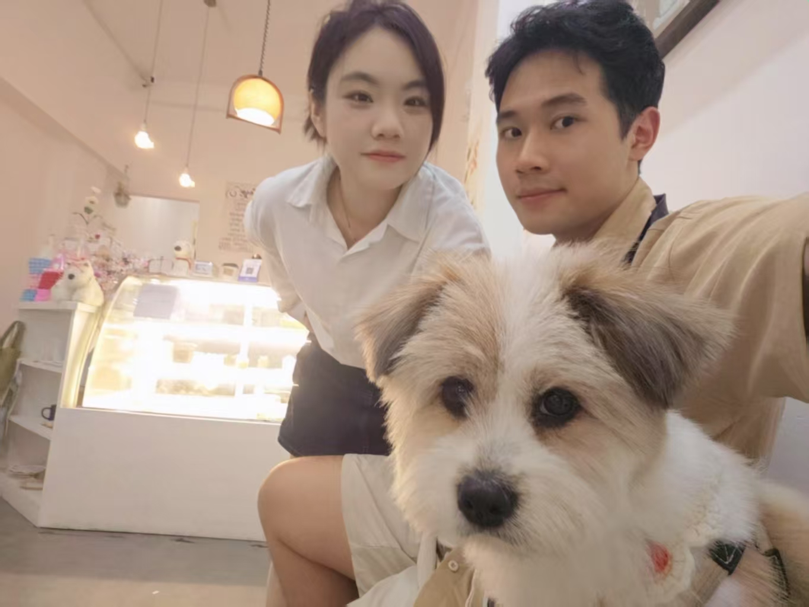
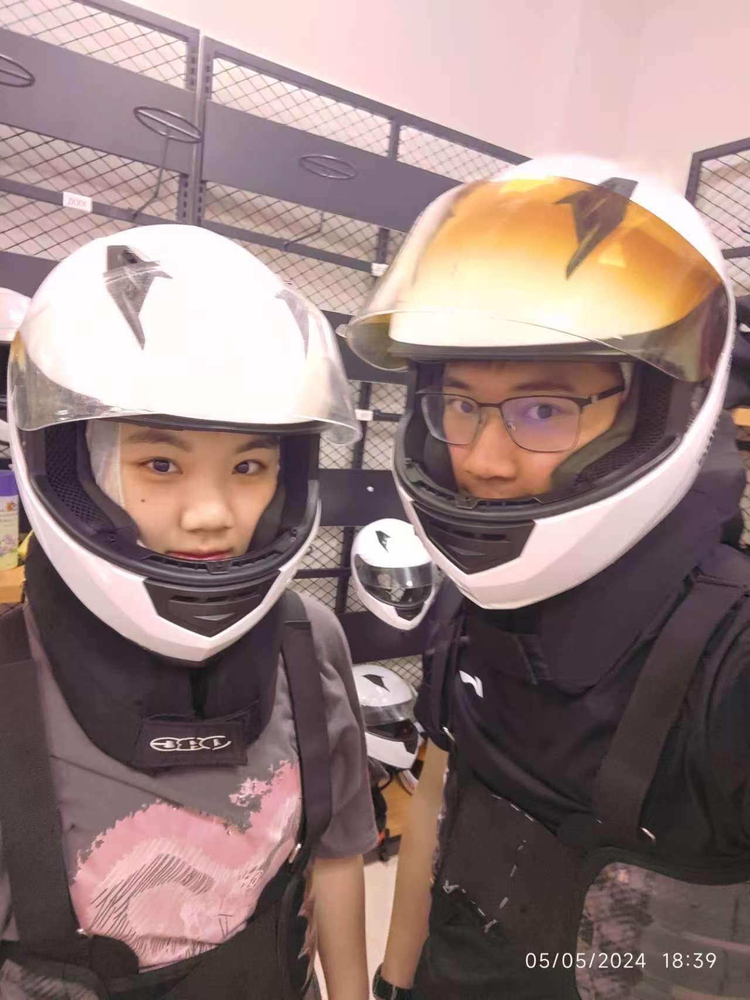
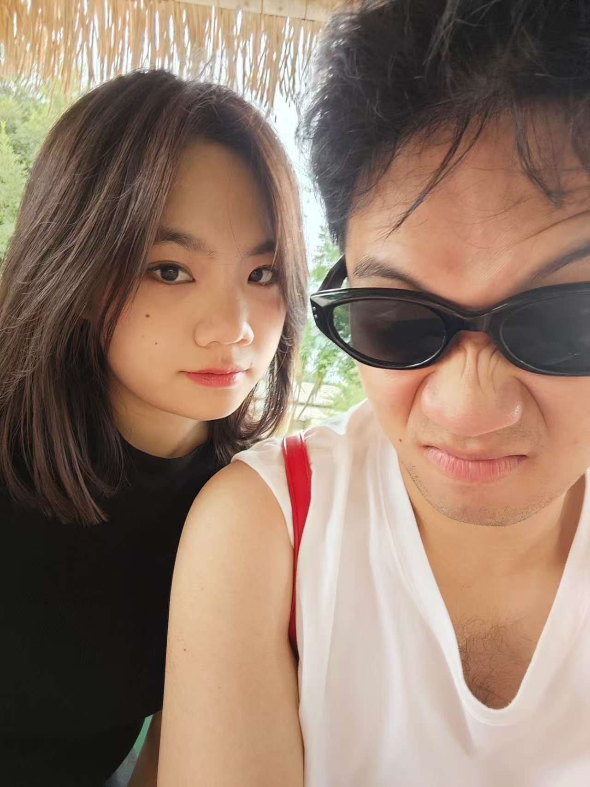
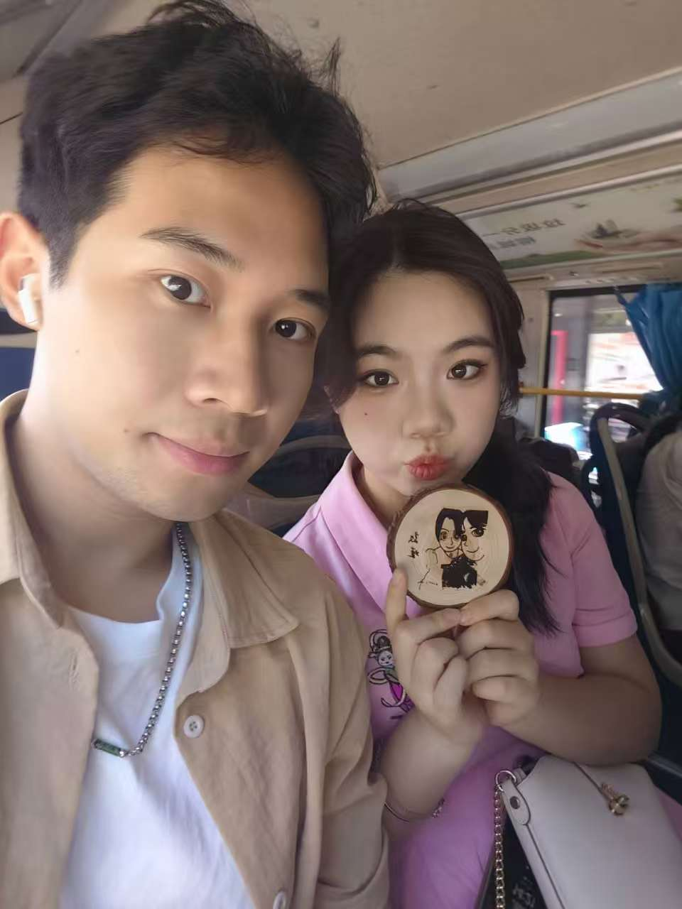

致我最爱的瑾：
从2023年9月21日开始，我的世界因你而完整...
我想说，我想给你一个从未有过信仰的人的忠诚，想给你我那不被时间、欢乐和逆境触动的核心，也想给你我的寂寞、黑暗和我内心的饥渴。
我看了许多情书，但那些真正感人的，真正能令人深感其中的，往往是那些通讯并不发达，久居异地的情侣们，多数也是在表达对对方的思念，和心里的爱意。
我们没有久居异地，但我的思念和爱意不会随着时间淡去，在共同度过的时间里，生活充满了无法言喻的可能性。如加缪笔下的故事一般，每一次的攀登都是追逐着一种超越日常的存在。



